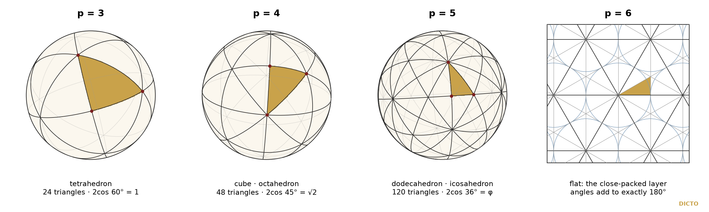

A map and almanac of the work: threads, names, concepts and the one triangle
This is a map of DICTO's work in one place, so that no detail has to be carried in the head. Threads follow one idea from paper to paper; Names lists every named solid, piece, family and rule with who named it and where it first appears; the Almanac of Concepts says in plain words what each operation, law and method is and where it is used; the last page puts every thread on the one triangle of mirrors. To find anything, look it up in Names or the Almanac and follow the paper numbers.
10 threads run through the papers. Each paper is listed, in the order of its number, with one line on what it adds to the thread; a paper can sit on several threads. Lines marked → are the verified cross-links of the audit of 4 November 2026 (study 2026-11-04-cross-links, section A).
Euclid's dodecahedron as a cube with six roofs, all five Platonic solids in one cubic cell, and the jewels and stars that fill its gaps.
→ #8 → #38a: the nesting I(1) ⊂ GSD ⊂ D(φ) of #38a is the EKP cell nesting of #8 (cross-links audit, row 12).
Endless nests of icosahedral solids that repeat φ³ larger each turn, every layer filled by a few exact pieces.
→ #34 → #91 (+ #35, #33): the same tight-cycle criterion; none of #34’s 8,742 cycles closes on a power of φ, while #91’s golden-cut stations give 119 at φ (row 7).
The DICTO Ogdoecontahedron (OG), polar of the Hecatodihedron, with its packings, its relatives up and down, and its place in the octet.
Single solids and mixtures that fill space, made exactly by moving a lattice, by thirteen-cell blocks or by a kit of connectors.
Two kinds of point and one sliding weight: space shared out as pairs of convex pieces, and the web of the faces they share.
→ #51, #53 → #86: #86’s member A cubes (λ = 3/8) of edge 1/√2 are #51’s cube end; member B (λ = −1/8) is the octet switch (row 9).
Close-packed layers stacked cubic (c) or hexagonal (h) in any order, and the exact laws every stacking obeys, tested on real crystals.
→ #69 → #91 (+ #30): #91’s golden-tilt Fibonacci word is #69’s c → ch, h → c (share 1/φ²) (row 10).
→ #67 → #73: #73’s ice I_sd value uses #67 Theorem 1 on random stackings (row 11).
Cut a solid from its centre into one pyramid per face; then fill space with the pyramids, turn them outwards into stars, or keep only the walls between them.
→ #77 → #92 (+ #40, #57; #51/#86): #77’s main theorem is #92’s reduction; #92 answers what #77 left open (row 1).
→ #43 → #80, #78, #79, #81 (+ #90, #91): #80’s gains (R/r)² = 9, 3, 15 − 6√5 are #43’s constants; #43 Lemma 3 is #80’s “T is polar reciprocation” (row 2).
→ #85 → #87: #85’s angles δ = α + α′ are the angles of #87’s Vacuus fins (row 13).
The regular four-dimensional solids, above all the 600-cell (the White Queen) and the 120-cell (the Red Queen): their slices, shadows and the path between them.
→ #76 → #91: the three uniform μ of #91’s 600 × 120 sweep are #76’s edge-equalising cuts (row 3).
Cut every corner of a solid by the same amount so that every face keeps the golden ratio: where such cuts exist, and where they live.
One slider from the octahedron through the cuboctahedron to the cube, met as a weight walk, a polar pair, a six-dimensional section and a four-dimensional path.
→ #53 → #91 (+ #52): the 24-cell honeycomb sliced vertex-first is #53’s rock-salt lane, cell-first the CsCl lane (row 4).
→ #81 → #91, #90: #81’s core turn on S(μ) is ν ↦ (R/r)²/ν; on C·O μ ↦ 3/μ, beside the CsCl partner μ ↦ 3 − μ (row 5).
→ #54 → #90, #91: #54 Theorem B is the polar side of the C·O sweep; the rhombic dodecahedron is H(2) (row 6).
→ #53 → #89: DICTO’s cut-cube and octahedra filling (#89 §7) is #53’s CsCl lane (row 8).
217 entries, alphabetical (a leading “DICTO” is passed over in the order). “Named by” is taken from the paper's credit line or text; “see #N” means the text read for this draft does not say who chose the name; “placeholder” marks a name waiting for DICTO's choice. First: the paper or finding (F) where the name first appears; D: the number in the DICTOnary.
| Name | Named by | First | D | Also called · note |
|---|---|---|---|---|
| Admiral Cap | DICTO | F21 | D16 | icosahedron edge roof |
| Aetos | DICTO | #29 | D25 | |
| Alice | DICTO | #63 | D94 | |
| Alice series slices: Alicia, Unicorn, Bandersnatch | DICTO | #63 | shapes first found by Alicia Boole Stott (1900) | |
| All-Golden Polytopes, DICTO | DICTO | #91 (draft) | ||
| Antonius | DICTO | #44 | D65 | |
| ATOM-13×13, DICTO | DICTO | #26 | ||
| Atraktos | DICTO | #29 | D24 | |
| AXE | DICTO | #19 | Mosseri–Sadoc tile t6 (scaled by 1/φ) | |
| B · HexOct −1/8 c-tile | placeholder (#86) | #86 | D113 | whole octahedra (placeholder) |
| B · HexOct −1/8 h-tile | placeholder (#86) | #86 | D114 | whole octahedra (placeholder) |
| DICTO Belted Triacontahedron | DICTO | #37a | D37 | DBT |
| Blockhead | DICTO | #56 | D79 | |
| Bodhi seed | DICTO | #24 | ||
| Bull-horns OG adaptor | DICTO | #36 | D33 | |
| C · HexOct −1/8 c-tile | placeholder (#86) | #86 | D115 | placeholder |
| C · HexOct −1/8 h-tile | placeholder (#86) | #86 | D116 | placeholder |
| Chain of Karma | DICTO | #22 | ||
| Chucky | DICTO | #57 | D80 | |
| CLEO | DICTO | #19 | Mosseri–Sadoc tile t4 (scaled by 1/φ) | |
| Cleo star | DICTO | #35 | ||
| Cleo Towers | DICTO | #43 | D74 | 8 tower pieces |
| Cleo-Icos | DICTO | #29 | Oktaktis (as the OTT’s octahedral ray, #43); the icosahedron’s face pyramid (classical shape) | |
| Crown Jewel | DICTO | #24 | D17 | |
| Cube Pearl | DICTO | #80 | D106 | |
| D · HexOct −11/24 c-tile | placeholder (#86) | #86 | D117 | placeholder |
| David | DICTO | #55 | shape: a tetragonal disphenoid | |
| Delian bond | DICTO | #51 | ||
| Delilah | DICTO | #51 | shape: the regular octahedron, at the Delian bond | |
| DICTO Deltoid Aktis | DICTO | #43 | D55 | |
| Dented tetrahedron L/R | DICTO | #37 | D72 | golden-key octet |
| DESHI | DICTO | #19 | ||
| Diadem | DICTO | #24 | ||
| DICTONIC BONDS | DICTO | #51 | the three bonds holding the DICTONIC SOLIDS | |
| DICTONIC SOLIDS | DICTO | #51 | the six convex and keyed solids of #48 and #51 | |
| DICTO Dodeca-13 | DICTO | #13 | ||
| DICTO Dodeca-13 Needle | DICTO | #13 | D7 | |
| DICTO Dodeca-13 Star | DICTO | #13 | D9 | |
| DICTO Dodeca-13 Unit | DICTO | #13 | D8 | finned unit |
| DICTO Dodeca-13 Wedge | DICTO | #13 | D6 | |
| Dodecaxes | DICTO | #48 | D70 | |
| Dogstar | DICTO | F12 | the solid is Hart's stellation 8 of the dodecahedron (1996) | |
| Double Vision | DICTO | #33 | both cycles in one space | |
| DICTO DPHP | DICTO | #39 | D48 | |
| E · HexOct 1/10 c-tile | placeholder (#86) | #86 | D118 | placeholder |
| Euclid–Kepler–Pacioli cell and network | DICTO | #8 | EKP | |
| Fallen Humpty | placeholder (#62) | #62 | D102 | |
| Fang | DICTO | #57 | D81 | |
| Fibonacci stacking | joint (#40) | #40 | ||
| DICTO Fill set 1 / 2 pieces | DICTO | #37a | D73 | grown bipyramid, grown tetrahedra L/R |
| Five-sided Vajra | DICTO | #38 | D42 | |
| DICTO FPD | DICTO | #38 | D41 | flat pentakis dodecahedron |
| frog chorus (five voices) | DICTO | #30 | A Fibonacci Spine | |
| FUJI | DICTO | #19 | D12 | |
| Galois twins | DICTO | #90 (draft) | the Greater and Lesser Golden Cut Cubes (D123, D124) | |
| Ganesha | DICTO | #61 | D84 | |
| GBPC | DICTO | #36 | D32 | Golden Bodhi Pyrochlore Corner |
| Golden Bodhi Pyrochlore | DICTO | #36 | ||
| Golden Clasp | DICTO | Star Cores study (2026-10-31) | D107 | |
| Golden OGs: Lesser Golden OG, Greater Golden OG | DICTO | #91 (draft) | ||
| golden tetrahedra (Danzer, Mosseri–Sadoc tiles) | classical | #38a | not the Golden Cut Tetrahedra (GCT) of #88/#89: name clash noted in the cross-links audit | |
| Golden TI Star | DICTO | #78 | D103 | |
| DICTO Golden Tight Cycles | DICTO | #91 (draft) | ||
| DICTO Golden-Regular Cuts | DICTO | #89 | Greater and Lesser Golden Cut Icosidodecahedron and Snub Dodecahedron | |
| Goliath | DICTO | #55 | shape: the hull of Jessen's orthogonal icosahedron, the classical Z12 icosahedron of A15 | |
| Greater and Lesser Golden Cut Great Dodecahedron, Great Icosahedron, Small and Great Stellated Dodecahedron | DICTO | #89 | the eight Kepler–Poinsot golden cuts | |
| Greater and Lesser Golden Cut Icosidodecahedron | DICTO | #89 | found independently; Zefiro 2011's regular-hexagon and regular-decagon stages | |
| Greater Golden Cut Cube | DICTO | #88 | D123 | Galois twin (#90) |
| Greater Golden Cut Dodecahedron | DICTO | #88 | D119 | |
| Greater Golden Cut Icosahedron | DICTO | #88 | D121 | |
| Greater Golden Cut Rhombic Dodecahedron | DICTO | #89 | D127 | |
| Greater Golden Cut Rhombic Triacontahedron | DICTO | #89 | D129 | |
| Greater Golden Cut Snub Dodecahedron L/R | DICTO | #89 | D131 | |
| Greater Golden Cut Tetrahedron | DICTO | #88 | D125 | |
| DICTO GTI | DICTO | #38 | D40 | Golden Truncated Icosahedron |
| DICTO-GTT-Solids | DICTO | #88 | Icosaxes, Unborn Axes, White Knight; two members added in #89 | |
| Haigha | DICTO | #65 | D96 | |
| Hamlet | DICTO | #80 | D108 | |
| Hatta | DICTO | #65 | D97 | |
| DICTO Hecatogdoecontahedron | DICTO | #34a | ||
| DICTO Hex Aktis | DICTO | #43 | D54 | |
| DICTO Hexa | DICTO | #18 | ||
| DICTO Hexa Jewel | DICTO | #18 | D11 | |
| DICTO Hexa-Key | DICTO | #18 | D10 | |
| Hexagonal Cleo | DICTO | #38 | D43 | |
| Hexagonality Law | DICTO | #66 | ||
| HexOct | DICTO | #75 | Endless Stack Cell (placeholder of #75 v1) | |
| HexOct c-tile | DICTO | #75 | D110 | λ = 1/10 |
| HexOct family | placeholder (#86) | #86 | members A–E by weight | |
| HexOct h-tile | DICTO | #75 | D111 | λ = 1/10 |
| HexOct-K | DICTO | #75 | keyed HexOct tiles | |
| Humpty Dumpty | DICTO | #63 | D85 | |
| Ian Dury | DICTO | #56 | D78 | |
| Ian Dury-K, Rhombo-K, Sonsam-K, Lahdeli-K | DICTO | #56 | the -K (keyed) forms | |
| DICTO-ICOSA star | DICTO | #29 | the DICTO-Star with a pyramid on each of its 152 free faces | |
| Icosaxes | DICTO | #48 | Greater Golden Cut Octahedron (#88); shape known: Koca et al. 2015, truncated octahedron x = τ | |
| Icosaxes Bloom, Bud and Seed | DICTO (working names) | #59 | also Lotus Jewel Bloom, Bud, Seed | |
| Icosaxes Hexa | DICTO | #59 | ||
| DICTO Interlock sets 1 and 2 | DICTO | #33 | Dharma-Ends, Dharma-Middle | |
| Jabberwock | DICTO | #63 | D88 | |
| Janus c/h pieces | DICTO | #57 | ||
| DICTO Janus c/h Pyrochlore | DICTO | #60 | ||
| DICTO Jewel | DICTO | #41 | D4 | Dragon Jewel (first name) |
| DICTO Jewel-Tetra, Jewel-Octa, Jewel-Rhombi | DICTO | #41 | first called the DICTO Jewel tetrahedral / octahedral cluster (F15) | |
| Jubjub | DICTO | #63 | D93 | |
| Julias (G1–G10) | DICTO | #54 | in tribute to Júlia Pimentel | |
| Kagemusha | DICTO | #62 | D86 | Shadow-17 (placeholder) |
| Kagome Hulls | DICTO | #17 | ||
| DICTO-Kepler golden truncations | DICTO | #88 | the ten Greater and Lesser Golden Cut Platonic solids (D119–D126 with Icosaxes and Unborn Axes) | |
| DICTO Kepler–Poinsot–UP Cycle | DICTO | #38a | ||
| Keyaxes | DICTO | #59 | D83 | |
| Keyed octahedron | DICTO | #37 | D34 | golden-key octet |
| King of Pentacles | DICTO | #19 | D14 | |
| Kion | DICTO | #29 | D23 | |
| DICTO KRE | DICTO | #39 | D45 | |
| Kyushindo series | DICTO | #43 | ||
| Lahdeli | DICTO | #56 | D77 | |
| Lesser Golden Cut Cube | DICTO | #88 | D124 | Galois twin (#90) |
| Lesser Golden Cut Dodecahedron | DICTO | #88 | D120 | |
| Lesser Golden Cut Icosahedron | DICTO | #88 | D122 | |
| Lesser Golden Cut Rhombic Dodecahedron | DICTO | #89 | D128 | |
| Lesser Golden Cut Rhombic Triacontahedron | DICTO | #89 | D130 | |
| Lesser Golden Cut Snub Dodecahedron L/R | DICTO | #89 | D132 | |
| Lesser Golden Cut Tetrahedron | DICTO | #88 | D126 | |
| Lion | DICTO | #63 | D87 | |
| Lotus Hexa | DICTO | #59 | ||
| Lotus Jewel | DICTO | F21 | D15 | clawed icosahedron |
| Lotus Jewel Axes | DICTO | #48 | D69 | |
| Lotus seed | DICTO | #22 | Icosa-13 | |
| Mad Hatter | DICTO | #63 | D91 | |
| Maedate, Kuwagata (notch pieces) | DICTO | #85 | ||
| March Hare | DICTO | #63 | D92 | |
| DICTO Metaxyhexecontahedron | DICTO | #35a | D30 | M |
| Mirror middle piece Mg | DICTO | #37a | D39 | |
| Monkey Staff | DICTO | #27 | D20 | |
| Monkey Staff B | DICTO | #38 | D44 | |
| Mono-Strut, Mono-Length, Disc and Isofin Vacuus | DICTO | #87 | ||
| DICTO OCD Stella | DICTO | #31a | D29 | |
| OG turned out | DICTO | #43 | ||
| DICTO Ogdoecontahedron | DICTO | #31 | D28 | OG; OCD; O |
| Oktaktis | DICTO | #43 | the Cleo-Icos as the OTT’s octahedral ray | |
| Ophelia | DICTO | #80 | D109 | |
| DICTO OTT | DICTO | #37a | D38 | Octahedrally Truncated Triacontahedron |
| DICTO Palintriacontahedron | DICTO | #35b | D31 | |
| Penta-cleo | DICTO | #20 | D66 | |
| DICTO PHE | DICTO | #39 | D46 | |
| Pimentels (G11) | DICTO | #54 | in tribute to Júlia Pimentel | |
| PiTet (Universal PiTet) | DICTO | #38 | Pi for the spherical progression, Tet for the triangles | |
| Polar Cleo Towers | DICTO | #43 | D75 | 7 tower pieces + core ray |
| Red King | DICTO | #65 | D98 | |
| Red Knight | DICTO | #65 | D100 | |
| Red Queen | DICTO | #65 | the 120-cell | |
| Regular-hexagon elongated dodecahedron | known (Grünbaum 2010); found independently by DICTO | F5 | ||
| Reuleaux dodecahedron, icosahedron, cube and octahedron | DICTO (names by look) | #45 | not Reuleaux polyhedra in the strict sense (#45) | |
| Ritsudō cycle | DICTO | #23 | the Spheres of Dharma nesting | |
| Rule of Halves | DICTO | #57 | ||
| Samson | DICTO | #51 | D71 | |
| Shield | DICTO | #28 | D21 | |
| DICTO skewed elongated dodecahedron ED F16 | DICTO | F7 | D2 | |
| DICTO skewed elongated dodecahedron ED F18 | DICTO | F7 | D3 | |
| DICTO skewed rhombic dodecahedron | DICTO | F1 | D1 | |
| Slice-48, 12-dented icosahedron, augmented dodecahedron | placeholders (#62) | #62 | ||
| Sonsam | DICTO | #56 | D76 | |
| Sphen | DICTO | #29 | D26 | |
| Sphenion | DICTO | #29 | D27 | |
| Spheres of Dharma | DICTO | #23 | ||
| DICTO Spheroid-13 RD | DICTO | #25 | ||
| Splash Rules | DICTO | #61 | rule finder, 27 October 2026 (#84) | |
| DICTO-Star | DICTO | #14 | ||
| Star Chain Reaction | DICTO | F12 | told in #42 | |
| Star Halo | DICTO | #78 | D104 | |
| Stella–Jewel Lattice | DICTO | #17 | ||
| Stretched dodecahedron | DICTO | F11 | D5 | |
| DICTO stretched solids (equal-edged, telescoped) | DICTO | #49 | ||
| Stupa | DICTO | #27 | D19 | |
| Sunstar | DICTO | F12 | a dodecahedron with the Dogstars of its six face-neighbour cells (#42) | |
| Sunstar Lattice, Sunstar-Tetra, Sunstar-Octa, Sunstar-Rhombi, Sunstar-Hexa | DICTO | #42 | Sunstar clusters (F16) | |
| DICTO Sunstar-Hexa-Key | DICTO | #42 | D53 | |
| Swap Rule | DICTO | #61 | ||
| Tetartoid core | DICTO | #37 | D36 | golden envelope network |
| DICTO Tetraktis | DICTO | #43 | D57 | OTT rhombic ray |
| Theaetetus (world) | DICTO | #29 | after Theaetetus of Athens | |
| TI Star | DICTO | #78 | Truncated Icosahedron Star; Golden TI Star (D103) at s = φ | |
| TI Star core | DICTO | #78 | D105 | |
| DICTO TPH | DICTO | #39 | D49 | Triangle-Pentagon Hecatontatriacontadihedron |
| DICTO TPP | DICTO | #39 | D47 | |
| DICTO TQ-320 | DICTO | #43 | D59 | |
| DICTO TQ-500 | DICTO | #43 | D61 | |
| DICTO TQD-732 | DICTO | #43 | D62 | |
| DICTO TQH | DICTO | #39 | D50 | Triangle-Quadrilateral-Hexagon Polyhedron |
| DICTO TQHD | DICTO | #39 | D52 | Triangle-Quadrilateral-Hexagon Diacosihedron |
| DICTO TQHD-662 | DICTO | #43 | D63 | |
| DICTO TQP | DICTO | #39 | D51 | Triangle-Quadrilateral-Pentagon Polyhedron |
| DICTO TQP-252 | DICTO | #43 | D58 | |
| DICTO TQP-402 | DICTO | #43 | D60 | |
| DICTO TQP-672 | DICTO | #43 | D64 | |
| DICTO Triaktis | DICTO | #43 | D56 | OTT triangle ray |
| Tricap | classical | #48 | Mosseri–Sadoc tile t3 | |
| Triskelion Tetrahedron | DICTO | #57 | D82 | TT |
| DICTO Truncated-Icosahedral Hecatodihedron | DICTO | #28 | D22 | DICTO Hecatodihedron; H |
| Tweedledee | DICTO | #63 | D90 | |
| Tweedledum | DICTO | #63 | D89 | |
| Twisted cube | placeholder (#86) | #86 | D112 | A · HexOct 3/8 h-tile (placeholder) |
| Unborn | DICTO | #48 | the squeezed icosahedron in the cubic grid of icosahedra | |
| Unborn Axes | DICTO | #48 | Lesser Golden Cut Octahedron (#88); shape known: Koca et al. 2015, truncated octahedron x = 1/τ | |
| UNITY, VENUS | DICTO | #19 | UNITY: icosidodecahedron + 12 J11; VENUS its closed form (#26) | |
| DICTO Vacuus Solids | DICTO | #87 | after Leonardo's vacuus bodies in Pacioli's De divina proportione | |
| VAJRA | DICTO | #19 | D13 | |
| Vajra (fine) | DICTO | #24 | D18 | |
| W | DICTO | #37 | D35 | one-piece glue |
| Walrus | DICTO | #65 | D99 | |
| White Knight | DICTO | #65 | D101 | |
| White Queen | DICTO | #63 | the 600-cell | |
| White Rabbit | DICTO | #63 | D95 | |
| Window Law | DICTO | #84 | ||
| X | DICTO | #47 | D67 | cube of edge φ minus one Euclid roof (#47 connector) |
| Y | DICTO | #47 | D68 | cube of edge φ plus one Euclid roof (#47 connector) |
42 concepts: operations, constructions, laws, theorems and methods, as distinct from the named shapes. Each definition is taken from the wording of the paper cited; then the first paper and its date, the papers that use it, its threads, and who proposed it.
c/h stacking words. Each layer sits on the one below as in the octet (c) or as its mirror image (h); any word in c and h is a stacking (#40).
First: #40 The DICTO OG Family on Every Stacking (20 October 2026) · Used in: #57, #58, #60, #61, #64, #66, #67, #74, #83, #84, #86, #92 · Threads: Stackings and the Hexagonality Law; OG, the Ogdoecontahedron family · Proposed: Jagodzinski's notation (classical); taking the OG family to every stacking was proposed by Claude and adopted by DICTO (#40)
core turn (core cycle). The solid common to the hulls of the tips of each family of faces; for the truncated icosahedron it alternates, and two turns give it back (#81).
First: #78 The Truncated Icosahedron Star (TI Star) (current version 3 November 2026) · Used in: #81, #90, #91 · Threads: Pyramids, Stars and Vacuus; The cube–octahedron sweep · Proposed: DICTO found it for TI (#78) and proposed it for every two-family solid (#81)
cut equals shadow. Asking the cut to equal the shadow of a lattice orbit selects μ = φ, where the roots of D6 cast the Icosaxes point for point (#90).
First: #90 Golden on the Octahedron, Silver on the Cube: Six Dimensions and the Golden Cut Cubes (draft) (draft, 4 November 2026) · Used in: — · Threads: The cube–octahedron sweep; The golden cuts · Proposed: see #90
Dehn invariant (counting). A polyhedron that tiles space has Dehn invariant zero; #44 makes a Dehn-type count on dihedral angles rigorous with the Splitting Theorem of Conway, Radin and Sadun.
First: #22 The Chain of Karma (current version 20 October 2026) · Used in: #36, #37, #37a, #38, #38a, #44 · Threads: Pyramids, Stars and Vacuus; The golden cycles · Proposed: classical (Dehn; Debrunner)
Delian bond. The cut of the octet’s double cones at which the two solids have the same volume: the tetrahedron’s has doubled and the octahedron’s halved (#51).
First: #51 The Delian Bond (24 October 2026) · Used in: #52, #53, #56, #85, #92 · Threads: Bonds · Proposed: DICTO proposed the approach and named Samson and Delilah; doubling is the ancient Delian problem (#51)
DICTONIC SOLIDS and BONDS. The six convex and keyed solids of #48 and #51, held in three bonds (#51).
First: #51 The Delian Bond (24 October 2026) · Used in: #52, #53 · Threads: Bonds · Proposed: DICTO (names, #51)
EKP construction. Put Euclid's six roofs on a cube and reflect the roof corners back through the cube faces: they land on a regular icosahedron inside (#8).
First: #8 The Euclid–Kepler–Pacioli Cell (current version 20 October 2026) · Used in: #17, #18, #41, #42, #79 · Threads: Kepler, Euclid and the stars · Proposed: DICTO's construction (#8)
face-to-face reduction. In every face-to-face tiling by face pyramids, the pyramids round each apex make up their whole solid (#77).
First: #77 Face to Face: A New Law of Aristotle's Pyramids (30 October 2026) · Used in: #92 · Threads: Pyramids, Stars and Vacuus; Stackings and the Hexagonality Law · Proposed: DICTO proposed the face-to-face case (#77)
Fibonacci stacking. Layers c and h in the never-repeating order of c → ch, h → c; the hexagonal share is exactly 1/φ² (#69).
First: #40 The DICTO OG Family on Every Stacking (20 October 2026) · Used in: #69, #83, #84, #91 · Threads: Stackings and the Hexagonality Law; OG, the Ogdoecontahedron family · Proposed: joint work (#40)
field obstruction. The Golden Cut Cubes need Q(√2, √5), so no point set with coordinates in Q(√5) holds a similar copy of one (#90).
First: #90 Golden on the Octahedron, Silver on the Cube: Six Dimensions and the Golden Cut Cubes (draft) (draft, 4 November 2026) · Used in: — · Threads: The golden cuts; The cube–octahedron sweep · Proposed: see #90
gnomon. The piece which, added to a figure, makes a whole of the same shape, only larger (Euclid, Heron) (#54).
First: #54 One Turn Is a Gnomon (25 October 2026) · Used in: #66, #78 · Threads: The golden cycles · Proposed: classical; DICTO's idea to carry it into his three-dimensional golden cycle (#54)
golden cut. Cutting every corner of a solid equally so that each face becomes a truncated polygon with its sides in the golden ratio φ (#88).
First: #88 Every Platonic Solid Has Exactly Two Golden Cuts (current version 3 November 2026) · Used in: #89, #90, #91 · Threads: The golden cuts; The cube–octahedron sweep · Proposed: DICTO's observation of the 3-fold hexagon in his solids; the solids and family names are DICTO's (#88)
golden cycle. An exact, endlessly repeating nesting of icosahedral solids, each layer filled by a few repeated pieces, growing by φ³ each turn (#22, #23).
First: #22 The Chain of Karma (current version 20 October 2026) · Used in: #23, #24, #32, #33, #34, #35, #54, #78, #91 · Threads: The golden cycles · Proposed: DICTO's (#22, #23)
golden split. Cut each AXE into four little pyramids from one inner point and give each to the piece it touches; at 1/φ along its axis nothing sticks out (#48).
First: #48 The Golden Split (23 October 2026) · Used in: #51, #52, #59 · Threads: Bonds; The golden cuts · Proposed: DICTO: pieces without odd protrusions, cuts "hemispherical, or anywhere in between" (#48)
growth rule T. Every corner v of a solid gives the face plane v·x = v·v, through v and at right angles to the line from the centre; T(S) is the solid these planes bound (#39).
First: #38 Universal PiTet (current version 20 October 2026) · Used in: #39, #43, #78, #79, #80, #81, #91 · Threads: The golden cycles; OG, the Ogdoecontahedron family; Pyramids, Stars and Vacuus · Proposed: DICTO's growth rule (#80); T is the 3D form of the classical antipedal construction (#38 v3)
Hexagonality Law. In every stacking each kind of piece totals exactly what its layers hold in their own pure stackings, a straight line in the share of hexagonal layers (#66).
First: #66 The Focus (current version 28 October 2026) · Used in: #67, #68, #69, #70, #71, #72, #73, #74, #75, #83, #84, #90, #91 · Threads: Stackings and the Hexagonality Law · Proposed: DICTO's law (#84)
HexOct layer tiles. The tile of a layer is its share of space, four pieces; only two tiles, c and h, occur in any stacking (#75).
First: #75 HexOct: Two Tiles for Every Stacking (current version 29 October 2026) · Used in: #83, #86 · Threads: Stackings and the Hexagonality Law · Proposed: DICTO's idea and name (#75)
Janus c/h pieces. Octahedral pieces with one cubic and one hexagonal half, looking into one stacking above and the other below (#57).
First: #57 The Rule of Halves (26 October 2026) · Used in: #58, #60, #61, #64, #66, #67, #74, #83 · Threads: Stackings and the Hexagonality Law · Proposed: DICTO (name, #57)
Kagome hull test. Group cells into hull-shaped clusters and ask whether any two share at most one piece and every shared piece lies in exactly two (#17).
First: #17 Kagome Hulls (current version 20 October 2026) · Used in: #18, #41, #42, #59 · Threads: Kepler, Euclid and the stars · Proposed: DICTO's test (#17)
keys and dents. A key or a dent moves small pieces from one solid to its partner; keys change the pieces but never the network (#54, #56).
First: #37 The DICTO Ogdoecontahedron on the Octet Truss (current version 20 October 2026) · Used in: #48, #51, #54, #56, #57, #58, #59, #75 · Threads: Bonds; OG, the Ogdoecontahedron family · Proposed: DICTO (keyed glue, #37; keyed versions of the new pairs, #56)
knitting slice. One plane, perpendicular to a row of touching balls, cuts every tetrahedron into an isosceles triangle and every octahedron into a rhombus, a chart to knit (#83).
First: #83 HexOct: Knitting Crystals (current version 1 November 2026) · Used in: — · Threads: Stackings and the Hexagonality Law · Proposed: DICTO proposed the idea (#83)
lattice moves. A shear of the lattice, the equal-edged cell and a stretch rebuild classical space-fillers in one setting (#50).
First: #50 One Move Each (23 October 2026) · Used in: — · Threads: Space-fillers and lattice moves · Proposed: Fedorov's moves (1885); DICTO's idea that they rebuild the cut-and-glue fillers (#50)
polar reciprocation. Replace each solid by its polar reciprocal: the nesting of a cycle reverses (#32).
First: #32 Inverted Shells: The Spheres of Dharma Turned Inside Out (current version 20 October 2026) · Used in: #33, #34, #38, #43, #54, #80, #87, #91 · Threads: The golden cycles; OG, the Ogdoecontahedron family; Pyramids, Stars and Vacuus; The cube–octahedron sweep · Proposed: classical; turning the cycle inside out by it was DICTO's idea (#32)
polyhedral stretching. Slide a solid in a straight line and take the shape it sweeps through (#49).
First: #49 The Polyhedral Stretching Theorem (22 October 2026) · Used in: — · Threads: Space-fillers and lattice moves · Proposed: DICTO (the stretched dodecahedron, F11, #49)
pyramidise (centre pyramids). Split a solid whose centre lies inside every face plane into its centre pyramids, one cone from the centre over each face (#44, #87).
First: #44 Aristotle's Pyramid (21 October 2026) · Used in: #65, #77, #78, #79, #81, #85, #87, #92 · Threads: Pyramids, Stars and Vacuus · Proposed: Aristotle's pyramid (classical); DICTO proposed pyramidise as one operation on any such solid (#87)
Reuleaux construction. A ball on every corner of a Platonic solid, radius the solid's diameter; the body is what all the balls share (#45).
First: #45 The Reuleaux Platonic Solids (21 October 2026) · Used in: #87 · Threads: Space-fillers and lattice moves · Proposed: DICTO's idea (#45)
reverse step P. The step back: take as new corners the foot points of the face planes, the points of those planes nearest the centre (#39).
First: #39 The DICTO OG Family (20 October 2026) · Used in: #43, #80 · Threads: OG, the Ogdoecontahedron family · Proposed: DICTO proposed running the rule the other way (#39)
Rule of Halves. A tetrahedral gap takes the piece of the pure stacking of its nearest layer; an octahedral gap's piece is two halves, from the layers above and below (#57).
First: #57 The Rule of Halves (26 October 2026) · Used in: #58, #60, #61, #64, #66, #67, #69, #72, #74, #75, #83, #84, #85, #86, #92 · Threads: Stackings and the Hexagonality Law; Bonds · Proposed: DICTO (#84 credit); DICTO's idea to follow the web onto every stacking (#57)
shadow forms. Other ways of breaking up the same space, to find new pieces (#48).
First: #48 The Golden Split (23 October 2026) · Used in: #51 · Threads: Bonds · Proposed: DICTO's idea (#48)
spinel twin law. Twinning on an octahedron-face plane by a half-turn about ⟨111⟩; for OG the twin is OG turned 60° (#37a).
First: #36 Golden Bodhi Pyrochlore (current version 20 October 2026) · Used in: #37a, #40 · Threads: OG, the Ogdoecontahedron family; Stackings and the Hexagonality Law · Proposed: classical crystallography
Splash Rules. Look for one simple rule behind a whole family of exactly computed values (#84).
First: #61 The Swap Rule (current version 27 October 2026) · Used in: #84 · Threads: Stackings and the Hexagonality Law · Proposed: DICTO, 27 October 2026 (#84)
Star and Star Halo. Turn a solid’s face pyramids outwards and it becomes a star; the tightest skin round the tips is the star’s halo (#79).
First: #78 The Truncated Icosahedron Star (TI Star) (current version 3 November 2026) · Used in: #79, #80, #81, #85 · Threads: Pyramids, Stars and Vacuus; The golden cycles · Proposed: DICTO's idea (#78); the name Star Halo is DICTO's
Swap Rule. The two mixed pieces always add up to the two pure ones (#61).
First: #61 The Swap Rule (current version 27 October 2026) · Used in: #64, #66, #67, #69, #72, #74, #84 · Threads: Stackings and the Hexagonality Law · Proposed: DICTO (name, #61)
the sweep S(μ) = P ∩ μP*. The flats y = x/μ of the product P × P* of a solid and its polar cut out P ∩ μP*; every corner cut of P or P* is such a section (#91).
First: #90 Golden on the Octahedron, Silver on the Cube: Six Dimensions and the Golden Cut Cubes (draft) (draft, 4 November 2026) · Used in: #91 · Threads: The cube–octahedron sweep; The golden cuts · Proposed: DICTO proposed cube × octahedron as the six-dimensional home of the pair (#90) and following each solid with its dual through the dimensions (#91)
tight cycles. Nestings in which every step is tight; one that closes at a power of φ is a DICTO Golden Tight Cycle (#34, #91).
First: #34 Progenitors (current version 20 October 2026) · Used in: #91 · Threads: The golden cycles · Proposed: see #34; the name DICTO Golden Tight Cycles is DICTO’s (#91)
tower move. Moving one tower of the c-tile by one lattice step along its own layer joins the towers along a face (#86).
First: #86 The HexOct Family (3 November 2026) · Used in: — · Threads: Stackings and the Hexagonality Law · Proposed: DICTO proposed true simple pieces (#86)
truncated triangle. A hexagon with all six angles 120° and sides alternating between two lengths; the regular hexagon is the case of equal sides (#88).
First: #20 The FUJI Family (date to check) · Used in: #88, #89, #91 · Threads: The golden cuts · Proposed: classical face; DICTO observed that it runs through his solids (#88)
Vacuus: SHEETS and STRUTS. Keep only the walls between the centre pyramids, a fin O–A–B for each edge; built as SHEETS (the fins) and STRUTS (a rod from the centre to every corner, with the edges) (#87).
First: #87 DICTO Vacuus Solids (3 November 2026) · Used in: — · Threads: Pyramids, Stars and Vacuus · Proposed: DICTO's idea and name (#87)
valley rule. Shorten each spike just enough to clear its neighbours: the ridges keep full spikes and the valleys flatten (#79).
First: #79 Star Cores of DICTO's Solids (current version 1 November 2026) · Used in: #85 · Threads: Pyramids, Stars and Vacuus · Proposed: DICTO's rule (#79)
web of bonds. Draw one line, a bond, between every two pieces that share a face; the lines make a web, the classical weighted Delaunay web (#52).
First: #52 The Web of Bonds (25 October 2026) · Used in: #53, #56, #57, #58 · Threads: Bonds · Proposed: DICTO's idea, 25 October 2026 (#52)
weight walk (power cell). Each piece is the region nearer, in a weighted sense, to its own point than to any other; one number, a weight given to one kind of point against the other, slides (#52, #53).
First: #52 The Web of Bonds (25 October 2026) · Used in: #53, #55, #56, #57, #58, #60, #61, #64, #66, #67, #69, #75, #86, #90, #91 · Threads: Bonds; Stackings and the Hexagonality Law; The cube–octahedron sweep · Proposed: power diagrams are classical (Aurenhammer); DICTO's two loops read this way (#52)
Window Law. Anything fixed by g consecutive layers has a mean that is linear in the shares of the c/h words of length g (#84).
First: #84 The Window Law (1 November 2026) · Used in: — · Threads: Stackings and the Hexagonality Law · Proposed: DICTO's idea (#84)
The Golden Ladder, chapter 1 (One Triangle, Three Numbers, draft of 4 November 2026) shows that the five Platonic solids come from three kaleidoscopes, the spherical triangles with angles 90°, 60° and 180°/p for p = 3, 4, 5, and that each carries one number, 2 cos(180°/p): φ for the dodecahedron and icosahedron (p = 5), √2 for the cube and octahedron (p = 4), 1 for the tetrahedron (p = 3). At p = 6 the triangle is flat and tiles the plane under the close-packed layer of balls, the setting of the stacking papers. The table places each thread by its number world and by the dimensions its papers reach.

| Thread | Number world | 2D | 3D | 4D | 6D | 8D | From |
|---|---|---|---|---|---|---|---|
| Kepler, Euclid and the stars | φ (p = 5), on the cube | ● | Euclid's cube with roofs; the Dogstar ties the cube to the dodecahedron (ch. 1 §4) | ||||
| The golden cycles | φ (p = 5) | ● | ● | icosahedral nests ×φ³; Lotus seed centres = 600-cell vertex and neighbours (#22); #91 draft | |||
| OG, the Ogdoecontahedron family | φ (p = 5); flat (p = 6) in #40 | ● | ● | OG in Q(√5); OG as section and hull of the six-dimensional product (#91 draft) | |||
| Space-fillers and lattice moves | 1, √2 and φ | ● | all five solids and their mixes (#47) | ||||
| Bonds | √2 (p = 4), φ in the golden loop | ● | ● | octet and cube (#51); icosahedra (#48); three plane networks (#53) | |||
| Stackings and the Hexagonality Law | flat (p = 6); φ in the Fibonacci stacking | ● | ● | close-packed layers; share 1/φ² (#69) | |||
| Pyramids, Stars and Vacuus | 1, √2 and φ | ● | ● | T + O and cube pyramids (#44); TI Star (#78); pyramids as cores of 4D solids (#65) | |||
| The four-dimensional queens | φ (p = 5) | ● | ● | 600-cell and 120-cell, numbers a + b√5 (#63) | |||
| The golden cuts | 1, √2 and φ | ● | ● | ● | ● | ● | c_n = 2cos(180°/n) (#88); 4D (#89); Z6 and E8 → H4 (#90 draft) |
| The cube–octahedron sweep | √2 (p = 4), golden stations | ● | ● | ● | C·O sweep; rectified tesseract (#89); cube × octahedron (#90 draft) |
The golden cuts reach furthest, to the E8 lattice in eight dimensions (#90); OG and the cube–octahedron sweep reach six (#90, #91). The flat triangle (p = 6) carries the stackings, where φ enters through the Fibonacci stacking (#69). The placement is the compiler's reading of the papers named in the last column.